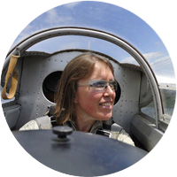

О НАС
Ближайший к Москве планерный аэродром — и самый красивый.
Прямо у берега Истринского водохранилища — возможны полеты над водой.
Аэродром «Шевлино» существует с 2005 года.
Торжественное открытие посадочной площадки состоялось 25 июля 2012 года.
Аэродром легкой гражданской авиации «Шевлино» с планерным клубом относится к Учебному Центру легкомоторной авиации и планеризма ДОСААФ России, располагается в 55 км от МКАД по Пятницкому шоссе.
Адрес: 141590, Россия, Московская область, Солнечногорский район, деревня Шевлино.
- Аэронавигационная информация — Индекс UUEH
- Координаты КТА N56 06,188 — E36 48,101
Смотреть на карте аэродромов - Частота f=123.850 МГц (“Шевлино-Вышка”)
- Превышение — 175 метров
- Полоса 16°/196°, 900×60 метров, ГВПП, круг L/R (северный)
- Диспетчер-информатор: +7 (917) 502-77-16 (Юрий)
- Воздушное пространство класса G до высоты 500 м по приведенному. СМИ о нас
- Погода на аэродроме
- Прогноз парения
НАШ ЭКИПАЖ
РуководствоСергей Васильевич РябчинскийПрезидент Федерации планерного спорта России, Директор Учебного центра легкомоторной авиации и планеризма ДОСААФ России |
Лётно-инструкторский составОлег Эдуардович ЕмельяновЗаместитель начальника по летной подготовке, Мастер Спорта по планеризму, командир летного планерного звена, лётчик-инструктор планерист. Выпускник КАТУ ДОСААФ СССР |

Лётно-инструкторский составЮрий Викторович БолтенковЛётчик-инструктор планерист. Выпускник Донецкого АСК. Чемпион Украины 2005г |

Лётно-инструкторский составАнна Анатольевна ЦимбалЛётчик-инструктор планерист. Выпускница ВАУЛ ДОСААФ СССР |
Лётно-инструкторский составИрина Александровна ЖогинаЛётчик-буксировщик. Выпускница ВАУЛ ДОСААФ СССР |
Лётно-инструкторский составДмитрий Викторович КизиловЛётчик-инструктор планерист. Выпускник Черниговского ВВАУЛ |
ТехникЮрий Юрьевич Сизов |
Диспетчер-информаторВладимир Павлович Кузин |
НАШ АВИАПАРК
Планер G103C Twin III
Технические особенности
| Экипаж | 2 |
| Длина | 8,18 м (26 ft 10 in) |
| Высота | 1,55 м (5 ft 1 in) |
| Размах крыльев | 17,50 м (57 ft 5 in) |
| Площадь крыла | 17,8 м2 (191 sq ft) |
| Удлинение крыла | 17,1 |
| Вес пустого | 390 кг (869 lb) |
| Полезная нагрузка | 212 кг |
| Взлётный вес | 580 кг (1280 lb) |
| Нагрузка на крыло | 32,58 кг/м2 (6.67 lb/sq ft) |
| Конструкция из стеклопластика и углепластика | |
Лётные характеристики
| Максимальная скорость | 250 км/ч (160 mph) |
| Крейсерская скорость | 85 км/ч (53 mph) |
| Перегрузки | +5,3 / -2,65 в Va |
| Макс. аэродинамическое качество | 36,5 |
| Минимальное снижение | 0,64 м/с |
Планер L-13 Blanik
Технические особенности
| Экипаж | 2 |
| Длина | 8,4 м (27 ft 7 in) |
| Высота | - |
| Размах крыльев | 16,2 м (53 ft 2 in) |
| Площадь крыла | 19,15 м2 (206.1 sq ft) |
| Удлинение крыла | 13,7 |
| Вес пустого | 292 кг (644 lb) |
| Полезная нагрузка | - |
| Взлётный вес | 500 кг (1,102 lb) |
| Нагрузка на крыло | 26,17 кг/м2 |
Лётные характеристики
| Максимальная скорость | 253 км/ч |
| Скорость буксировки | 140 км/ч (87 mph) |
| Перегрузки | +5 / -2,5 |
| Макс. аэродинамическое качество | 28,2 |
| Скорость минимального снижения | 78 км/ч |
Планер AC-4-115
Технические особенности
| Экипаж | 1 |
| Длина | 5,47 м |
| Высота | 1,15 м |
| Размах крыльев | 12,6 м |
| Площадь крыла | 7,7 м2 |
| Удлинение крыла | 20,6 |
| Вес пустого | 110-115 кг |
| Полезная нагрузка | - |
| Взлётный вес | 265 кг |
| Нагрузка на крыло | - |
Лётные характеристики
| Максимальная скорость | 220 км/ч |
| Минимальная скорость | 70 км/ч |
| Перегрузки | - |
| Макс. аэродинамическое качество | 32 |
| Минимальное снижение | 0,96 м/с |